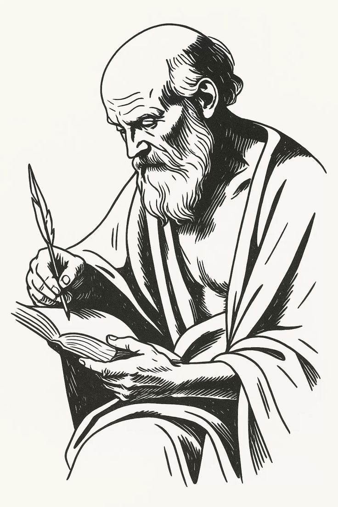
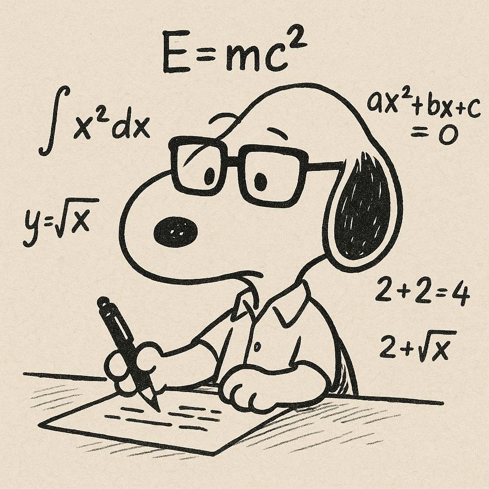

En este proyecto el primer parcial de la materia de Economía, no dejaron investigar y hacer un tríptico de la ansiedad el cual explicará qué es y sus características
Clic para descargar y visualizar proyecto
teníamos que investigar qué es la ansiedad y sus síntomas y cuáles son las características que abarca y el porqué este se da ese fue un proyecto de la materia de filosofía del proyecto transversal.
Clic para descargar y visualizar proyectoEste fue el proyecto transversal del primer parcial en la materia de actividades artísticas y culturales el cual nos dejó un tríptico de la ansiedad que es característica y sus principales causas
Clic para descargar y visualizar proyectoEse fue el proyecto de la maestra Maricela, el cual consistió en investigar como el yogan ayuda a calmar la ansiedad y los beneficios de esta
Clic para descargar y visualizar proyectoProyecto transversal de inglés la maestra Jazmín nos encargó una foto que nos dé tranquilidad y que nos recuerda un momento feliz de nuestra vida
Clic para descargar y visualizar proyecto
Esta fue la materia de temas selectos de matemáticas impartida por el profesor Israel, el cual nos dejó como proyecto transversal investigar las estadísticas de ansiedad en México
Clic para descargar y visualizar proyectoEn la materia de práctica de la visión ciudadana que nos le imparte la profesora Massiel nos pidió hacer un tríptico de qué es la ansiedad
Clic para descargar y visualizar proyectoDurante las actividades del PEC con el maestro Álvaro, aprendimos sobre la importancia de las actividades físicas, sus beneficios para la salud y los diferentes tipos que existen. También comprendimos que hacer ejercicio de manera constante ayuda a mantener una vida saludable y mejorar nuestro bienestar físico y emocional.Ademas de aprender a diseñar logos desde 0 con inkscape
Clic para descargar y visualizar proyecto Clic para descargar y visualizar proyectoCopyright © Pagina realizada por: Hannah Estefanya Camacho Trueba, Camila Gonzalez Rodrigez, Hector Gonzalez Camacho, Gabriel Estrada de la Cruz. . All Rights Reserved.